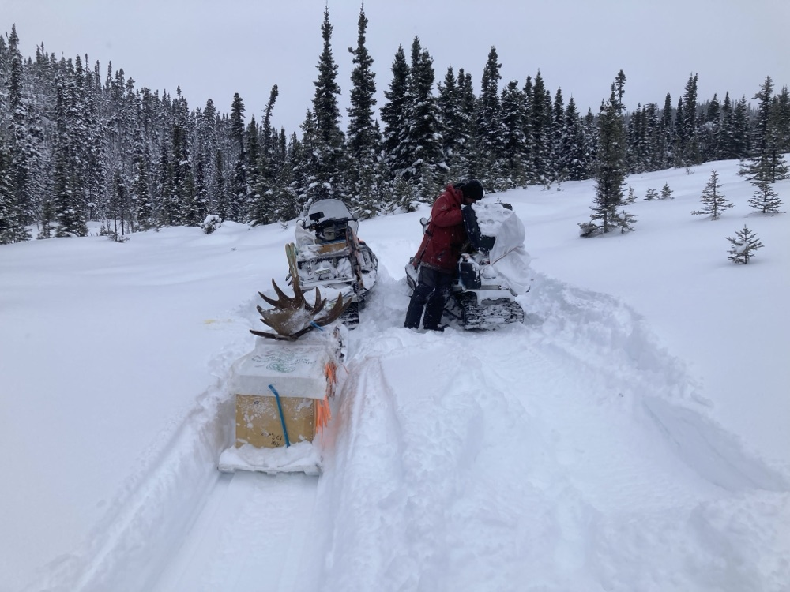
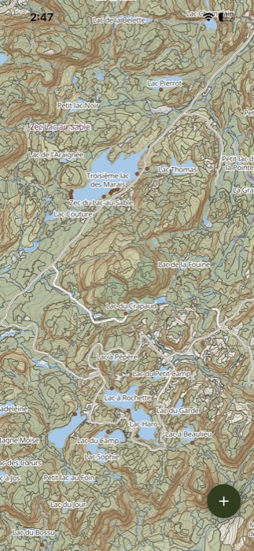

North Creek field day
Distance12.8 km
TransportATV
Avg. speed5.7 km/h
Duration2h 14m
Waypoints
Start7:42 AMStarting location
01 · StopAfter 4.2 mi · 12m stop
02 · Creek crossingAfter 3.7 mi · 24 min stop
End11:18 AM14.6 mi total